Sato-chan Collection
Sato-chan is still active today. He welcomes you at the entrances of Japanese pharmacies.
Sato-chan SA-8/サトちゃんSA-8型
Figure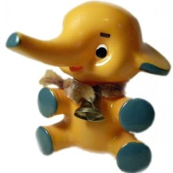
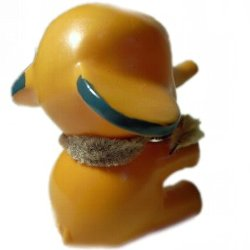
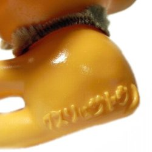
This Sato-chan was active from 1961 (Showa 36) until the current Sato-chan design was introduced.
I bought it at an auction. When old pharmacies go out of business, old giveaways sometimes turn up as deadstock. That was the case when I acquired this one—there were many of them packed inside a long, narrow box.
On the back, "M・P" is engraved. It is made by Modern Plastic. Back then, it seems Modern Plastic often manufactured these kinds of promotional items. I like the sound of the name "Modern Plastic." Each one is hand-painted, and while some parts are a bit rough (lol), it gives them great charm.
By the way, this Sato-chan's eyebrows are drawn with a marker pen. The "Kusuri wa Sato" (Medicine is Sato) lettering on the back also has great charm. (Acquired in 2001.)
I bought it at an auction. When old pharmacies go out of business, old giveaways sometimes turn up as deadstock. That was the case when I acquired this one—there were many of them packed inside a long, narrow box.
On the back, "M・P" is engraved. It is made by Modern Plastic. Back then, it seems Modern Plastic often manufactured these kinds of promotional items. I like the sound of the name "Modern Plastic." Each one is hand-painted, and while some parts are a bit rough (lol), it gives them great charm.
By the way, this Sato-chan's eyebrows are drawn with a marker pen. The "Kusuri wa Sato" (Medicine is Sato) lettering on the back also has great charm. (Acquired in 2001.)
Acquired: 2001
Randoseru Sato-chan/ランドセルサトちゃん
Figure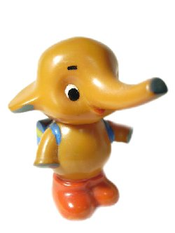
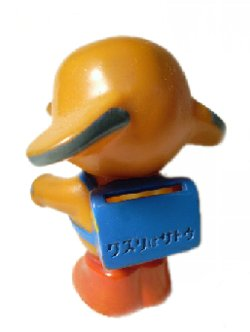
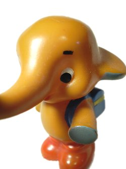
Just like the Type SA-8, the eyebrows are drawn with a marker pen. Since each one seems to be hand-painted, the thickness of the eyebrows varies. I believe it originally had a product number, but since I acquired it without the original bag it normally comes in, the exact details are unknown.
After comparing various Randoseru Sato-chan figures, I liked this one and bought it. This one has relatively thin eyebrows. Some of them have eyebrows drawn with something like spray paint, making Sato-chan look like Kenshiro from Fist of the North Star (lol). Even though it's the exact same figure, just the eyebrows alone completely change its expression.
"Kusuri wa Sato" (Medicine is Sato). A 500-yen coin won't fit into this coin bank. I've never tried it, but I wonder how much money it holds...? I get the feeling it doesn't hold very much. Would it hold a lot if they were older coins? The randoseru, shoes, eyes, nose, and everything else are all hand-painted. On the sole of the red shoe, it says "MODERN PLASTICS JAPAN" in tiny letters. You really have to stare closely to see it. (Acquired in 2002.)
After comparing various Randoseru Sato-chan figures, I liked this one and bought it. This one has relatively thin eyebrows. Some of them have eyebrows drawn with something like spray paint, making Sato-chan look like Kenshiro from Fist of the North Star (lol). Even though it's the exact same figure, just the eyebrows alone completely change its expression.
"Kusuri wa Sato" (Medicine is Sato). A 500-yen coin won't fit into this coin bank. I've never tried it, but I wonder how much money it holds...? I get the feeling it doesn't hold very much. Would it hold a lot if they were older coins? The randoseru, shoes, eyes, nose, and everything else are all hand-painted. On the sole of the red shoe, it says "MODERN PLASTICS JAPAN" in tiny letters. You really have to stare closely to see it. (Acquired in 2002.)
Acquired:2002
Dr. Sato-chan/ドクターサトちゃん
Figure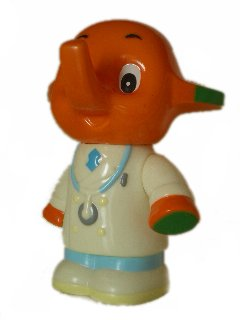
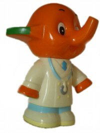
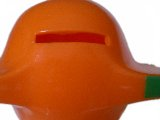
From the 20th Century Final Carnival.
I don't know what things are like now, but fakes of this Doctor Sato-chan and Satoko-chan used to exist. （￣ー￣；）
It's a shame I don't own one so I can't compare them with photos, but the fakes were super ugly.
They looked so little like the real thing that looking back now, I think maybe I should have gotten one... (lol) (Acquired in 2003.)
I don't know what things are like now, but fakes of this Doctor Sato-chan and Satoko-chan used to exist. （￣ー￣；）
It's a shame I don't own one so I can't compare them with photos, but the fakes were super ugly.
They looked so little like the real thing that looking back now, I think maybe I should have gotten one... (lol) (Acquired in 2003.)
Acquired:2002
Sato-chan Clip & Memo Holder/サトちゃんクリップ&メモホルダー
置物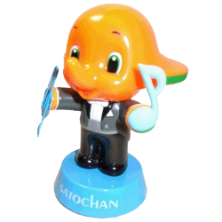
Comes with a treble clef magnet and clip. The fine details are very intricate.
Acquired:？
Go! Go! Sato-chan: The Story of a Cold/ゴー！ゴー！サトちゃん かぜのはなし
Books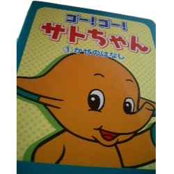
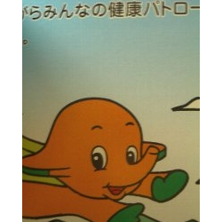
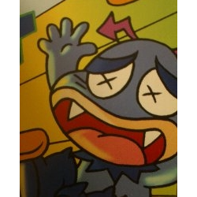
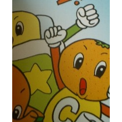
This is a picture book where Sato-chan is on health patrol and finds a boy (Mamoru-kun) who caught a cold. They fight it off with Vitamin-kun and Stona.
At the end of this picture book, Sato-chan's song and sheet music are printed. Since I can't read musical notes at all, I had no idea what the melody sounded like.
However, I found a Sato-chan Mover on a street corner, so I played the music to listen to it. It was a shame I couldn't ride it due to the weight limit (10 kg).
At the end of this picture book, Sato-chan's song and sheet music are printed. Since I can't read musical notes at all, I had no idea what the melody sounded like.
However, I found a Sato-chan Mover on a street corner, so I played the music to listen to it. It was a shame I couldn't ride it due to the weight limit (10 kg).
Acquired:？
Go! Go! Sato-chan: The Story of Cavities/ゴー！ゴー！サトちゃん むしばのはなし
Books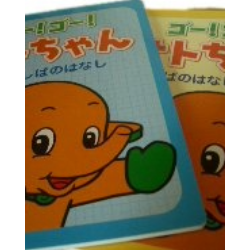
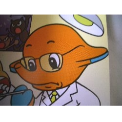
Doctor S. He is a dentist. It's a grown-up Sato-chan~ (lol). There are coloring pages too. Judging from this illustration, Doctor S seems to be an old-school Sato-chan, or rather a retro Sato-chan. (I guessed this from the color of his hands and ears.)
Once again, while Sato-chan is on health patrol, he finds Mamoru-kun in trouble with a toothache. When Doctor S examines him, he warns, "You were just about to get a cavity," and together with Acess, they fight off the cavity bacteria.
I remember feeling super excited about what was written inside these picture books when I first learned they existed—even though you could easily guess the plot if you thought about it for a second. Unlike goods such as figures or straps where you can tell what they are at a glance, picture books like these—which you can't understand until you actually hold them and look inside—were fun items that sparked my imagination until I got my hands on them.
Through this picture book, I learned about the existence of Sato-chan's Song and Satoko-chan's Song, which are now even posted on Sato-chan's web page, and I simply felt amazed. I wonder if they'll release a sequel (lol). Thank you always, Sato-chan~. If I catch a cold, please come to my house too (lol).
Once again, while Sato-chan is on health patrol, he finds Mamoru-kun in trouble with a toothache. When Doctor S examines him, he warns, "You were just about to get a cavity," and together with Acess, they fight off the cavity bacteria.
I remember feeling super excited about what was written inside these picture books when I first learned they existed—even though you could easily guess the plot if you thought about it for a second. Unlike goods such as figures or straps where you can tell what they are at a glance, picture books like these—which you can't understand until you actually hold them and look inside—were fun items that sparked my imagination until I got my hands on them.
Through this picture book, I learned about the existence of Sato-chan's Song and Satoko-chan's Song, which are now even posted on Sato-chan's web page, and I simply felt amazed. I wonder if they'll release a sequel (lol). Thank you always, Sato-chan~. If I catch a cold, please come to my house too (lol).
Acquired:？